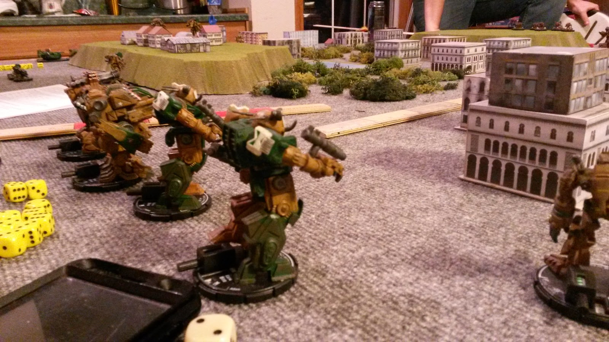
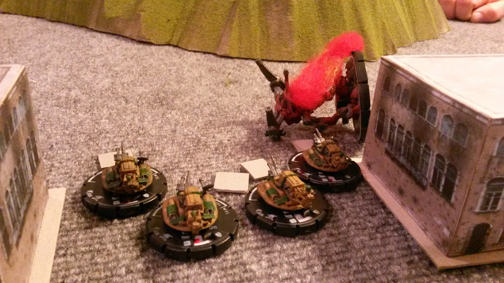

Use the damage and range printed on the base. Choose one weapon per attack. These rules apply to shooting only, even if you use the same damage value for a close attack.
Three weapon types


| Type | Strength | Cost |
|---|---|---|
| Ballistic | +1 damage against infantry or battle armor with no terrain cover | −1 attack if you moved or turned earlier in this activation |
| Energy | Piercing: ignore 1 point of armor | A firing ’Mech gains 1 extra heat. Damage against infantry is limited to 2 before armor |
| Rocket | Can shoot indirectly through blocking terrain and intervening bases | Stationary for the whole activation; Fire only. Indirect shots take −2 attack and −1 damage |
Ballistic: Move then Fire still takes recoil. Gunner checks the movement cost of that Advance only. Check the target’s terrain cover before equipment reduces or ignores it. Advance adds no extra accuracy penalty. Gunner removes recoil during Advance if movement costs no more than half speed, rounded up; count difficult terrain.
Energy: The heat cost applies only to ’Mechs. The infantry damage limit applies to every firer. Energy does not heat its target automatically.
Rocket: Includes both missiles and rockets. Keep the same position and facing for the whole activation. You cannot move or turn before or after firing Rockets, even with a second action. Declare direct or indirect fire before rolling. Direct shots use normal sight rules. Indirect shots ignore blockers, but keep the printed ranges, front arc, and target’s cover. They get no rear bonus.
You cannot shoot while engaged or at an enemy touching a friendly unit, even indirectly. Ordinary Rockets hit one target without a spotter, scatter roll, or blast. Named equipment can add effects: Anti-Personnel hits nearby infantry, Streak Missiles offers guided fire, and Electronic Camouflage blocks indirect fire and Streak. No pilot or equipment allows Rockets to fire during Advance.
Label your weapons
The original symbols show Energy, Ballistic, and Melee. There is no separate Rocket symbol. Before deployment:
- Mark each Energy damage value E. Melee is close-only.
- Mark each Ballistic damage value B.
- Change B to R only when a printed weapon name or an agreed unit listing identifies that weapon as missiles or rockets. Note the source. Mixed or uncertain weapons stay B; colors and sculpts are not enough.
- For a Rocket test without identified Rocket weapons, each player may use one Ballistic weapon on one ’Mech as a Rocket test substitute. Choose the substitute on its datasheet and use that cost. Mark it on the roster and keep it for the return game. Change no other printed values.
Labels stay fixed through damage, heat, and repair, even if a weapon becomes unusable and later returns. Equipment colors still work normally.
Damage and heat


Add heat modifiers to printed damage, then apply the weapon bonus or penalty. Add equipment and pilot bonuses (at most +1 combined), battle armor’s close bonus, and critical damage. Apply damage limits, then armor. Damage may be zero. Extra sources of Piercing do not add together.
Blue defense gives Armor 2 against Ballistic and Rocket shots; red gives Armor 2 against Energy. Ordinary Piercing ignores 1 armor; red Ballistic/Rocket damage (Armor Piercing) ignores all armor. Equipment colors keep their original weapon-specific identities: use the equipment reference.
Add Energy heat only when you roll the attack, including a miss or critical miss if the attacker survives. Add it to the action heat and the second-action surcharge, if any. Make at most one stress check for that action. Skipping an Advance shot still costs the action’s heat, but no Energy heat. Pulse adds one more heat if its second roll is made, paying ordinary Energy heat only once for the action. PPC Capacitor adds 1 heat when used. Alpha Strike replaces the action's heating with shutdown and ends the activation.
Examples
These damage examples use a vehicle or ’Mech with damage 3, no other bonuses or heat penalties, and a normal hit.
| Target | Ballistic | Energy | Rocket |
|---|---|---|---|
| Infantry in the open, no armor | 4 | 2 | 3 direct / 2 indirect |
| Infantry in cover, no armor | 3 | 2 | 3 direct / 2 indirect |
| Vehicle or ’Mech with Armor 1 | 2 | 3 | 2 direct / 1 indirect |
Cover still affects the attack roll. These heat totals are for a first action, without Jump or other equipment. A second action adds 1 heat:
| Situation | Ballistic | Energy | Rocket |
|---|---|---|---|
| Advance after moving | −1 attack; Gunner can remove it within half speed | No movement accuracy penalty; 2 ’Mech heat | Cannot shoot |
| Fire | 0 ’Mech heat | 1 ’Mech heat | 0 ’Mech heat; indirect fire takes −2 attack |
| Target behind blocking terrain | Cannot shoot | Cannot shoot | Indirect fire, if arc, range, and target are legal |
Indirect fire: A Rocket weapon with attack 8 and damage 3 Fires over a building. Dice totaling 12 give an attack total of 18 after the −2 penalty. A hit deals 2 before armor. The building is ignored; the target’s cover still applies.